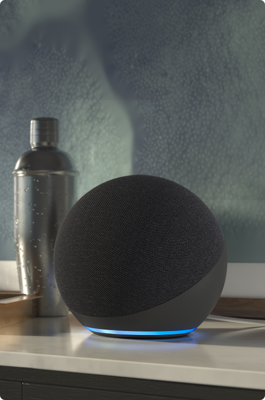

Home
assistance
Home assistance merujuk pada layanan atau teknologi yang dirancang untuk
membantu dan meningkatkan kehidupan sehari-hari di dalam rumah. Ini
dapat mencakup berbagai hal, mulai dari perangkat pintar yang dapat
dikendalikan secara otomatis hingga bantuan layanan manusia yang
diberikan secara langsung.

Google

Amazon
Google
Amazon

Kegunaan Home assistance di lingkungan rumah
- Perangkat Pintar: Beberapa perangkat pintar dirancang untuk memberikan bantuan di rumah. Contohnya termasuk lampu yang dapat dikendalikan secara otomatis, termostat pintar yang mengatur suhu, dan perangkat rumah tangga lainnya yang dapat dioperasikan melalui aplikasi atau suara.
- Asisten Virtual: Teknologi seperti asisten virtual (seperti Amazon Alexa, Google Assistant, atau Apple Siri) menyediakan kemampuan untuk memberikan perintah suara dan menerima informasi di rumah. Mereka dapat mengendalikan perangkat pintar, memberikan informasi cuaca, mengatur pengingat, dan banyak lagi.
- Pelayanan Kesehatan dan Keamanan: Sistem keamanan pintar, kamera pengawas, dan perangkat kesehatan pintar adalah contoh lain dari home assistance. Mereka membantu dalam menjaga keamanan dan memberikan pemantauan kesehatan di rumah.
- Pelayanan Manusia: Home assistance juga dapat melibatkan pemberian bantuan langsung oleh tenaga manusia, seperti perawat rumah atau pekerja sosial yang memberikan dukungan kepada individu atau keluarga dalam kebutuhan sehari-hari.
Product page